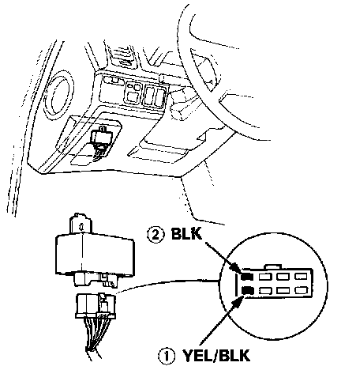
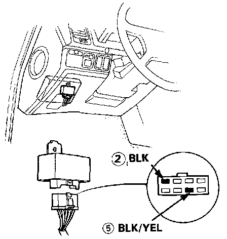
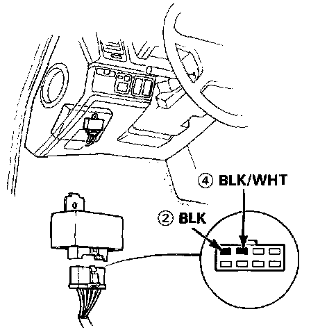
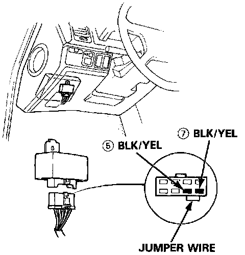

Coupe
Harness Test1. Keep the ignition switch in the OFF position.
2. Disconnect the main relay connector.
3. Check for continuity between the BLK wire (2) in the connector and body ground.

4. Attach the positive probe of voltmeter to the YEL/BLK wire (1) and the negative probe to the BLK wire (2).
Battery voltage should be available.
- If there is no voltage, check the wiring between the battery and the main relay as well as ECU fuse (15A) in the under-hood relay box.

5. Attach the positive probe of voltmeter to the BLK/YEL wire (5) and the negative probe to the BLK wire (2).
6. Turn the ignition switch ON.
Battery voltage should be available.
- If there is no voltage, check the wiring from the ignition switch and the main relay as well as No. 9 (10A) fuse.

7. Attach the positive probe of voltmeter to the BLK/WHT wire (4) and the negative probe to the BLK wire (2).
8. Turn the ignition switch to START position.
Battery voltage should be available.
- If there is no voltage, check the wiring between the ignition switch and main relay as well as No. 13 (7.5A) fuse.

9. Connect a jumper wire between the two BLK/YEL wires (5) and (7).
10. Turn the ignition switch ON.
The fuel pump should work.
- If the fuel pump does not work, check the wiring between the main relay and fuel pump, and the wiring from the fuel pump to the ground (BLK wire).